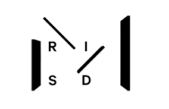

Zig-Zag Chair, 1941
Gerrit Thomas Rietveld (1888-1964) Dutch, designer
Gerard van de Groenekan (1904-1994) Dutch, cabinetmaker
The remarkably simple appearance of this chair belies its complex dovetailed construction, leading Gerrit Rietveld to describe it as his “designer’s joke.” The four rectangular planes meet at angles, requiring dovetailed joints and reinforcement by screws and wooden wedges. Visually, however, the chair is cohesive and anticipates the single-piece molded construction of 1960s plastic chairs. Rietveld aimed to design a functional chair reduced to its most basic parts and with minimal space displacement. As a prominent member of the Dutch De Stijl (The Style) design movement, architect/designer Rietveld adhered to the group’s advocacy of pure abstraction and universality through a reduction to the essentials of form and color. With just base, support, seat, and back, Rietveld’s totally deconstructed chair bears no resemblance to previous furniture forms.
